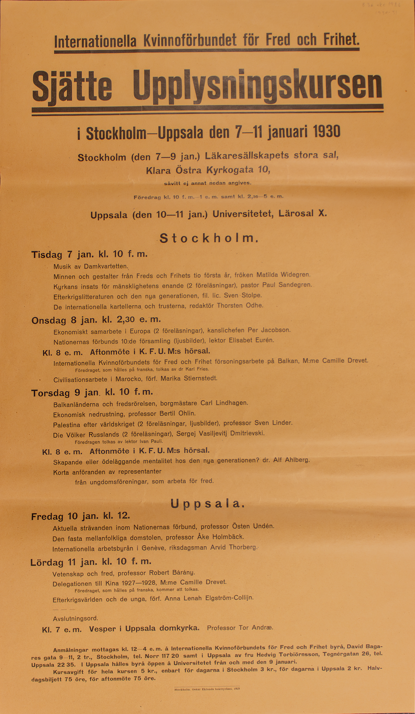

Affisch
Transkribering
Internationella Kvinnoförbundet för Fred och Frihet.
Sjätte Upplysningskursen.
i Stockholm-Uppsala den 7—11 januari 1930
Stockholm (den 7—9 jan.) Läkaresällskapets stora sal,
Klara Östra Kyrkogata 10,
såvitt ej annat nedan angives.
Föredrag kl. 10 f. m.— 1 e. m. samt kl. 2,30-5 e. m.
Uppsala (den 10—11 jan.) Universitetet, Lärosal X.
Stockholm
Tisdag 7 jan. kl. 10 f. m.
Musik av Damkvartetten.Minnen och gestalter från Freds och Frihets tio första år, fröken Matilda Widegren.
Kyrkans insats för mänsklighetens enande (2 föreläsningar), pastor Paul Sandegren.
Efterkrigslitteraturen och den nya generationen, fil. lic. Sven Stolpe .
De internationella kartellerna och trusterna, redaktör Thorsten Odhe.
Onsdag 8 jan. kl. 2,30 e. m.
Ekonomiskt samarbete i Europa (2 föreläsningar), kanslichefen Per Jacobson.Nationernas förbunds 10:de församling (ljusbilder), lektor Elisabet Eurén.
Kl. 8 e. m. Aftonmöte i K. F. U. M:s hörsal.
Internationella Kvinnoförbundets för Fred och Frihet försoningsarbete på Balkan, M:me Camille Drevet.
Föredraget, som hålles på franska, tolkas av dr Karl Fries.
Civilisationsarbete i Marocko, förf. Marika Stiernstedt.
Torsdag 9 jan. kl. 10 f. m.
Balkanländerna och fredsrörelsen, borgmästare Carl Lindhagen.Ekonomisk nedrustning, professor Bertil Ohlin.
Palestina efter världskriget (2 föreläsningar, ljusbilder), professor Sven Linder.
Die Völker Russlands (2 föreläsningar), Sergej Vasiljevitj Dmitrievski.
Föredragen tolkas av lektor Ivan Pauli.
Kl. 8 e. m. Aftonmöte i K. F. U. M:s hörsal.
Skapande eller ödeläggande mentalitet hos den nya generationen? dr. Alf Ahlberg.
Korta anföranden av representanter
från ungdomsföreningar, som arbeta för fred.
Uppsala.
Fredag 10 jan. kl. 12.
Aktuella strävanden inom Nationernas förbund, professor Östen Undén.Den fasta mellanfolkliga domstolen, professor Åke Holmbäck.
Internationella arbetsbyrån i Genève, riksdagsman Arvid Thorberg.
Lördag 11 jan. kl. 10 f. m.
Vetenskap och fred, professor Robert Bárány.Delegationen till Kina 1927-1928, M:me Camille Drevet.
Föredraget, som hålles på franska, kommer att tolkas.
Efterkrigsvärlden och de unga, förf. Anna Lenah Elgström-Collijn.
- - - Avslutningsord.
Kl. 7 e. m.Vesper iUppsala domkyrka. Professor Tor Andræ.
Anmälningar mottagas kl. 12-4 e. m. à Internationella Kvinnoförbundets för Fred och Frihet byrå,David Baga-
res gata 9-11, 2 tr., Stockholm, tel. Norr 117 20 samt i Uppsala av fru Hedvig Torbiörnsson, Tegnérgatan 26, tel.
Uppsala 22 35. I Uppsala hålles byrå öppen å Universitetet från och med den 9 januari.
Kursavgift för hela kursen 5 kr., enbart för dagarna i Stockholm 3 kr., för dagarna i Uppsala 2 kr. Halv-
dagsbiljett 75 öre, för aftonmöte 75 öre.
Stockholm Oskar Eklunds Boktryckeri,1929